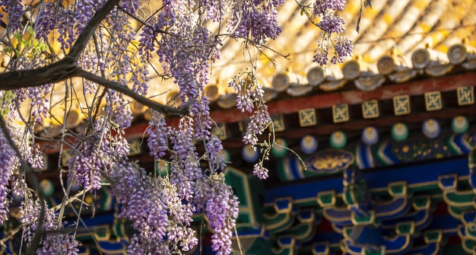

Selected
SELECTED
Summer palace
The most well-preserved Royal Palace, known as the "Royal Garden Museum"

South Luoguxiang
Nanluoguxiang is listed among 25 old city conservation areas, with a total length of 786 meters, which is one of the oldest neighborhoods in Beijing.

Temple of Confucius and Guozijian Museum
Located in Guozijian Street, Andingmen, Beijing, adjacent to the Temple of Confucius and the Lama Temple, it is the highest administrative institution of state management education in the Yuan, Ming and Qing dynasties of China and the highest institution established by the state
Mutianyu Great Wall
The Grand Canyon of the United States is a world-famous natural wonder